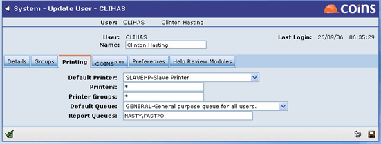

User Maintenance contains additional fields for Default Queue and Report Queues. Report Queues is a list of additional report queues the user can submit to (comma separated list, wildcards allowed).
